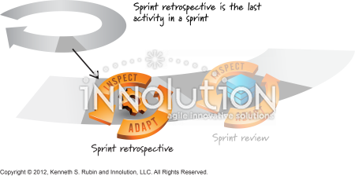

The Sprint Retrospective is a Scrum event held at the end of each Sprint to identify ways to improve the team's quality and effectiveness. It provides an opportunity for the Scrum Team to reflect on how the Sprint went, including collaboration, processes, tools, communication, and the Definition of Done. The team discusses what worked well, what challenges occurred, and what could be improved. Unlike the Sprint Review, which focuses on the product and stakeholder feedback, the Sprint Retrospective focuses on improving how the Scrum Team works together.
The Sprint Retrospective involves the entire Scrum Team: the Scrum Master, Product Owner, and Developers. The Scrum Master helps ensure that the event is productive and that everyone can participate in an open, respectful discussion. Team members inspect their interactions, processes, and tools to identify opportunities for improvement. For example, a team developing a Scrum educational website might discover that unclear GitHub Issue descriptions caused confusion or that communication delays affected progress. During the retrospective, the team could agree to clarify acceptance criteria before starting work and provide more frequent progress updates.

The goal of the Sprint Retrospective is not to assign blame or criticize individuals. Instead, the Scrum Team identifies the most helpful improvements and plans how to implement them. These improvements should be addressed as soon as possible and may be added to the Sprint Backlog for the next Sprint. The Sprint Retrospective concludes the Sprint and is timeboxed to a maximum of three hours for a one-month Sprint, with shorter Sprints generally requiring less time. By regularly inspecting and adapting its way of working, the Scrum Team can improve collaboration, reduce recurring problems, and deliver greater value over time.